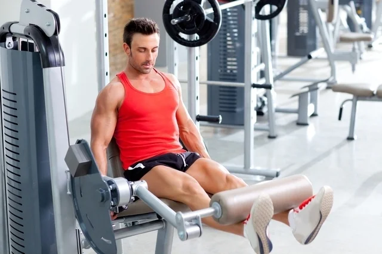

Bem-vindo ao Inicio
Este é o conteúdo da página inicial.
Treinos
Treinos para Biceps
Curls com halteres
Segure um halter em cada mão, com os braços estendidos ao lado do corpo e as palmas das mãos voltadas para frente.
Mantendo os cotovelos próximos ao corpo, flexione os braços levando os halteres em direção aos ombros. Em seguida, abaixe lentamente os halteres de volta à posição inicial.

Curls martelo
Segure um par de halteres com as palmas das mãos voltadas uma para a outra. Mantendo os cotovelos próximos ao corpo, flexione os braços levando os halteres em direção aos ombros.
Em seguida, abaixe lentamente os halteres de volta à posição inicial.

Rosca concentrada
Sente-se em um banco com as pernas afastadas. Segure um halter com uma mão e apoie o cotovelo no interior da coxa.
Mantendo o braço fixo, flexione o antebraço levando o halter em direção ao ombro. Em seguida, abaixe lentamente o halter de volta à posição inicial. Repita o exercício com a outra mão.

Rosca Scott
Sentado em um banco Scott, segure uma barra EZ com as mãos na largura dos ombros e as palmas voltadas para cima.
Mantendo os cotovelos apoiados no banco, flexione os braços levando a barra em direção aos ombros. Em seguida, abaixe a barra de volta à posição inicial.

Rosca com halteres inclinada
Deite-se em um banco inclinado com um halter em cada mão e as palmas voltadas para cima. Mantendo os cotovelos próximos ao corpo, flexione os braços levando os halteres em direção aos ombros. Em seguida, abaixe lentamente os halteres de volta à posição inicial.

Rosca com barra W
Segure uma barra W (ou uma barra reta com uma pegada estreita) com as mãos na largura dos ombros e as palmas voltadas para cima.
Mantendo os cotovelos próximos ao corpo, flexione os braços levando a barra em direção aos ombros. Em seguida, abaixe a barra de volta à posição inicial.

Treinos para Triceps
Extensão de tríceps deitado ou inclinado (tríceps testa), com barra reta ou barra EZ
O primeiro exercício da nossa lista de exercícios para tríceps...
, com barra reta ou barra EZ.webp)
Supino no banco reto com pegada fechada
Este exercício composto trabalha principalmente os tríceps, mas também aciona o peito e os ombros. Um estudo já mostrou que quando o exercício é feito em um banco reto com uma pegada menor, há uma ativação maior na cabeça longa do tríceps do que no banco inclinado.
A pegada fechada deve ser de uma distância de 20 a 25 cm entre as mãos para trabalhar bem os tríceps. Uma pegada menor que essa não coloca mais estresse nos braços, porém, traz um aumento de tensão nos pulsos, que não é o objetivo aqui.
Para os iniciantes no exercício, recomenda-se ter o acompanhamento de alguém durante sua execução. Também é importante ser cauteloso quanto à carga escolhida e não forçar além de seus limites, além de prestar atenção para que a barra alcance a região média do peito durante a descida. Ela não deve parar em nenhum outro lugar que não seja esse.

Mergulho no banco
Esta versão de exercícios para tríceps usa o peso do corpo e é executada com o auxílio de dois bancos retos. Também traz bastante ativação ao músculo do tríceps. Ao adicionar carga ao exercício, colocando um peso no colo, ele torna-se ainda mais eficiente.
No entanto, recomenda-se que a primeira vez em que for fazer o mergulho no banco, o peso não seja utilizado, para que você se acostume com os movimentos. Então, quando ele se tornar algo fácil de executar, você pode começar a adicionar a carga.
O movimento é composto e além de acionar os tríceps, trabalha o peito e os ombros. Seu nível de dificuldade é intermediário.

Tríceps apoiado no banco
Este tipo de exercícios para tríceps possui nível de dificuldade iniciante. Ele também aciona outros músculos como os deltoides, glúteos, posteriores da coxa, abdominais e quadris.
Durante a execução do tríceps no banco, recomenda-se manter o corpo reto e evitar o relaxamento excessivo dos quadris. Também é importante manter os cotovelos retos durante o exercício e evitar que eles abram para os lados.

Extensão de halteres sob a cabeça
Quando a extensão de halteres sob a cabeça é feita, com os braços erguidos acima da cabeça, a região da cabeça longa do tríceps é acionada. Este exercício de força possui um nível de dificuldade iniciante e além de atingir os tríceps, também trabalha os deltoides e o trapézio.

Extensão de tríceps no cabo sob a cabeça com corda (sentado ou em pé)
Temos outro exercício de nível de dificuldade intermediário que aciona a cabeça longa dos tríceps. Seu foco é a força e ele é executado no aparelho de cabo com uma corda. Durante todo o exercício, é importante que os cotovelos permaneçam alinhados, e que não abram para fora.
.webp)
Tríceps na polia alta com barra reta
Temos aqui um exercício que trabalha a cabeça lateral do tríceps melhor do que outros movimentos como a extensão de tríceps deitado, por exemplo. Este exercício trabalha os tríceps de maneira isolada.

Tríceps na polia alta com corda
O último item da nossa lista de exercícios para tríceps possui um nível iniciante de dificuldade. Ele age de maneira isolada e é classificado como excelente.

Treinos para Peito
Supino reto com a barra
Trata-se de um dos clássicos exercícios para peito. Deitar-se em um banco reto. Os joelhos devem estar flexionados, os pés firmes no suporte ou chão, as costas levemente arqueadas e os glúteos bem estabilizados no banco.
Pegar a barra com as mãos separadas em uma distância maior do que a largura dos ombros. Retirar o peso do suporte, segurando-o na linha do peito com os cotovelos estendidos.
Descer a barra até o peito de maneira controlada com os punhos retos, fazendo o movimento de flexão dos cotovelos para baixo. Fazer uma pequena pausa e empurrar a barra para cima.
A força do movimento deve estar no peito, e não nos braços. Durante essa etapa, os ombros devem ser mantidos para atrás e as escápulas devem permanecer fixas no banco.

Supino reto com halteres
Sentar em um banco reto com um halter em cada uma das coxas. Com o auxílio das pernas, subir os pesos ao mesmo tempo em que deita o corpo para trás, firmando bem as costas e os glúteos no banco.
Com os cotovelos estendidos, segurar um halter deitado em cada mão. A pegada deve ser com os polegares voltados para o lado de dentro. Um deve estar próximo ao outro, com ambos na altura do peito.
Descer os halteres de modo controlado, fazendo o movimento de flexão dos cotovelos até que as cargas alcancem a altura do peito. Durante a execução desta parte, alongar bem os músculos do peitoral.
Empurrar os pesos para cima, deixando um halter bem próximo ao outro, até os cotovelos se estenderem. A força deve estar concentrada nos músculos do peitoral. Somente os braços devem subir, os ombros devem ser mantidos encaixados para trás.

Flexão de braços básica
As flexões são um dos exercícios para peito mais conhecidos. A básica inicia na posição de quatro no chão ou em cima de uma esteira ou colchonete.
As mãos ficam separadas e alinhadas com a parte superior do peito, enquanto as pernas são estendidas para trás e os pés mantidos juntos.
Formar uma prancha com o corpo, deixando as costas eretas e em linha com as pernas. O pescoço e a cabeça devem ficar para cima e os músculos da coluna devem ser contraídos para que o corpo seja estabilizado.
Então é o momento de se abaixar devagar, dobrar os cotovelos e inspirar. Após, com os bíceps e o peito contraídos, retornar a posição inicial, sem se esquecer de expirar na hora da subida.

Supino inclinado com barra
Sentar-se no banco inclinado e firmar os pés no chão ou no suporte. Com as costas ligeiramente arqueadas, pegar a barra. A distância das mãos deve ser maior do que a largura dos ombros.
Remover o peso do suporte e estabilizá-lo na linha do peito com os cotovelos estendidos. Então, descer a barra, de modo controlado e com os punhos retos, até a parte superior da musculatura do peitoral.
O movimento deve ser realizado com a flexão dos cotovelos para baixo ao mesmo tempo em que o peito é aberto.
Fazer uma ligeira pausa e empurrar a barra de pesos para cima, com a força concentrada na parte superior da musculatura do peito. Essa etapa deve ser feita com os ombros para trás e as escápulas fixas no banco.
Após terminar suas repetições, devolver a barra ao suporte com cuidado. É aconselhável contar com o acompanhamento de alguém durante a execução do supino inclinado com barra.

Crucifixo no voador (Peck deck)
Sentar-se na máquina com as costas retas no suporte acolchoado do equipamento. Segurar as alças de modo que os antebraços fiquem paralelos ao chão. Para isso é necessário ajustar a máquina adequadamente. Se tiver dificuldades para fazer isso, peça ajuda ao instrutor da academia.
Trazer as alças para o centro de modo devagar, aproximando os braços e levando-os para o centro, ao mesmo tempo em que comprime o peito no meio e exala o ar.
Segurar a contração por um segundo e voltar lentamente ao posicionamento original até que o peito esteja completamente alongado, ao mesmo tempo em que inala o ar.
.webp)
Treino de Costas
Barra fixa (chinup) pegada fechada
Este exercício ajuda a fortalecer a parte superior do corpo. Além de trabalhar as costas, ele também atua em outras regiões musculares, como braços e ombros.
 pegada fechada.webp)
Barra fixa com pegada aberta
Esse é um dos mais clássicos exercícios para costas, ele trabalha muito a parte superior do músculo latíssimo do dorso, mas também atinge os bíceps e a parte do meio das costas. A barra fixa com pegada larga possui nível de dificuldade intermediário, e pode ser feita tanto com a pegada pronada (mais comum) como supinada (exige mais dos bíceps).

Remada curvada com barra e pegada pronada
A remada curvada trabalha a maior parte da musculatura das costas. No entanto, é fundamental se certificar de que a sua posição durante a execução do exercício está correta e de escolher uma carga apropriada, para não correr o risco de se machucar. Sendo assim, é recomendável ter a ajuda de um instrutor físico durante o treino.

Remada unilateral com halter (remada serrote)
Temos aqui um exercício unilateral, que ao trabalhar cada lado de maneira independente, permite que a amplitude de movimento seja maior, assim como a carga que é usada.
Outras vantagens são não ficar impedido de se exercitar caso o lado mais fraco falhe antes do mais forte e oferecer mais suporte à lombar, devido à possibilidade de apoiar a mão livre.
A remada unilateral com halter trabalha a região média das costas, o latíssimo do dorso, os bíceps e os ombros.
.webp)
Remada em pé com a barra T (remada cavalinho)
A remada em pé na barra T é uma das mais fáceis de serem executadas, ainda que seja classificada com grau de dificuldade intermediário.
.webp)
Remada no banco inclinado com halteres
A remada no banco inclinado com halteres é mais um dos exercícios para costas que trabalha músculos como o latíssimo do dorso, os músculos redondos que ficam nos ombros e os músculos rombóides, localizados nas costas.

Puxada pela frente com o triângulo no pulley
Outro exercício que trabalha bastante o latíssimo do dorso e que, devido ao tipo de movimento executado, ajuda muito no processo de construção muscular.

Puxada com barra no pulley
Este exercício trabalha vários músculos das costas, como o latíssimo do dorso, a região média das costas, os bíceps e os ombros, ele é classificado como um movimento de fortalecimento, sendo também indicado para iniciantes.

Agachamento
O agachamento é considerado um movimento completo, isso porque além de trabalhar a coxa, trabalha também a parte posterior da perna, glúteos e panturrilha, sendo, então considerado um ótimo exercício para fortalecer as pernas.
É importante que a pessoa tenha orientação do profissional de educação física para que sejam evitadas lesões. Assim, é recomendado que a pessoa posicione os pés na largura do quadril e agache como se fosse sentar em uma cadeira.
O agachamento pode ser feito com uma barra apoiada no trapézio e nos ombros ou com halteres na frente do corpo, devendo ser feito de acordo com a orientação do instrutor.
Extensora
A cadeira extensora é um ótimo exercício para trabalhar o músculo da parte da frente da coxa, chamado de quadríceps. Para isso, a pessoa deve ajustar o encosto do equipamento, de forma que o fundo das costas estejam bem apoiados e que o joelho não ultrapasse a linha dos pés.
Leg press
O leg press é também uma opção de exercício que ajuda a trabalhar os músculos da coxa, podendo ser feito em um equipamento que permite a flexão das pernas em 45º ou 90º, devendo o profissional de educação física indicar qual o equipamento de acordo com o objetivo do treino.
Esse exercício é bastante completo, pois permite trabalhar não só a parte da frente da coxa, mas também a parte posterior e dos glúteos. Par fazer esse exercício, deve regular o banco e ajustar os pés na plataforma e, em seguida, empurrar, voltando lentamente à posição inicial e repetindo esse exercício 10 a 12 vezes ou de acordo com a orientação do profissional de educação física.

Stiff
O stiff é um ótimo exercício para posterior de perna, pois trabalha todos os músculos da parte posterior, incluindo os glúteos. Esse exercício pode ser feito utilizando uma barra ou halteres e, para isso, deve segurar a carga na frente do corpo, mais ou menos na altura do quadril, e depois descê-la em direção aos pés lentamente, tendo atenção às costas que devem ser mantidas alinhadas para evitar compensação.
Elevação do quadril
A elevação de quadril é um dos exercícios que podem ser indicados para trabalhar os glúteos, podendo ser feito apenas com o peso corporal ou utilizando o peso. No caso de fazer apenas com o peso, a pessoa deve deitar no chão, com a barriga para cima e joelhos dobrados e levantar o quadril ao mesmo tempo que contrai os glúteos. Em seguida abaixar o quadril, evitando que toque no chão, e voltar a repetir o movimento.

Coice
O "coice" é outro exercício que trabalha principalmente os glúteos, no entanto também é capaz de ativar os músculos localizados na parte posterior da perna. Para fazer esse exercício a pessoa deve ficar na posição de quatro apoios e, com a perna dobrada ou estendida, elevar até a altura do quadril, ao mesmo tempo que faz a contração do glúteo. Após elevar, deve controlar a descida da perna até a posição original e depois voltar a realizar o mesmo movimento.
Exercício para panturrilha
O exercício isolado para panturrilha é normalmente feito no final do treino, isso porque todos os outros exercícios realizados durante o treino também trabalham esse músculo.